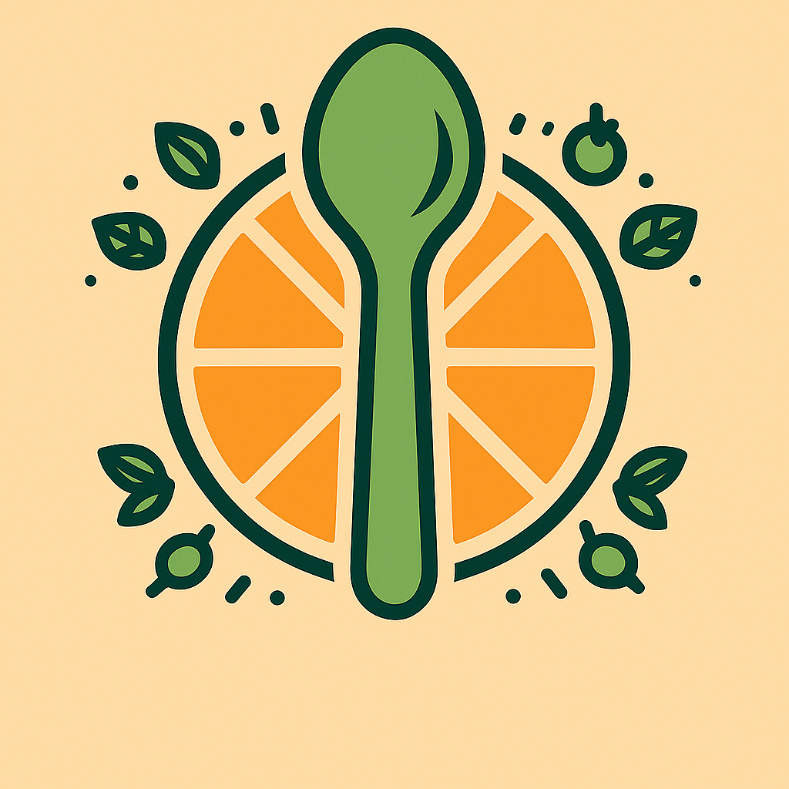

PROFILE
Analytics grounded in real product questions.
I’m a product and data analytics intern and M.S. Data Science student at UT Austin. I work across product, engineering, and business teams to turn reporting needs into useful dashboards and clear insights. My experience spans SaaS product analytics, data science research, operational analytics, and Python- and SQL-based workflows.
EDUCATION
Building a strong technical foundation
AUG 2026 — MAY 2027
The University of Texas at Austin
M.S. Data Science
MAY 2026 · GPA 3.7
The University of Texas at Austin
B.S. Economics · Computational Engineering · Data Science
IN PROGRESS
LaunchCode
Software Development Program
EXPERIENCE
Where I’ve made an impact
Togetherwork
Product and Data Intern · Austin, TX
- Build Power BI and Sigma dashboards for Gingr, StudioPro, and other SaaS products, translating reporting needs into actionable business and product insights.
- Partner with product, engineering, and development teams to clarify requirements and support data-informed decisions.
- Contribute to daily product discussions and recurring planning meetings, collaborating across business and technical priorities with AWS, Jira, Trello, and monday.com.
FIFA World Cup 26
Operations and Analytics Intern · Safety / Security · Houston, TX
- Analyzed fan-march logistics, screening throughput, and metro-station data with Python and visualization tools; presented recommendations to Houston Police Department and security leaders.
- Supported matchday operations by troubleshooting logistics apps and field devices and coordinating VIP movement across safety and stadium-access teams.

FoodScope AI
Data Analyst Intern · Remote
- Built Python machine-learning pipelines and SQL workflows, and automated marketing content to reduce campaign turnaround time by 40%.
- Analyzed consumer behavior with R and SQL to identify audience segments and purchase drivers.
SELECTED WORK
Projects & research
Maxel Lab (UPenn)
Data Systems Research FellowshipProvided data science research support across AI domains, applying statistical analysis and pipeline development to accelerate workflows for multidisciplinary researchers.
NVIDIA Developer Program
AI Robotics Orchestration PlatformIntegrated NVIDIA Isaac Sim 6G tools with a multi-turn Claude AI agent in a full-stack application (FastAPI, Streamlit, PostgreSQL) deployed with Docker across 3 OS models.
Spatiotemporal E. coli Modeling
UT Austin Computational ResearchEngineered predictive health risk models (weather API, 200K+ records) identifying 24% elevated exposure zones; designed visualizations to prioritize intervention strategy.
TOOLKIT
Skills & technologies
Languages & Frameworks
Systems & AI Tools
CONTACT
Let’s build something meaningful.
I’m always glad to connect about data, product, and software development opportunities.